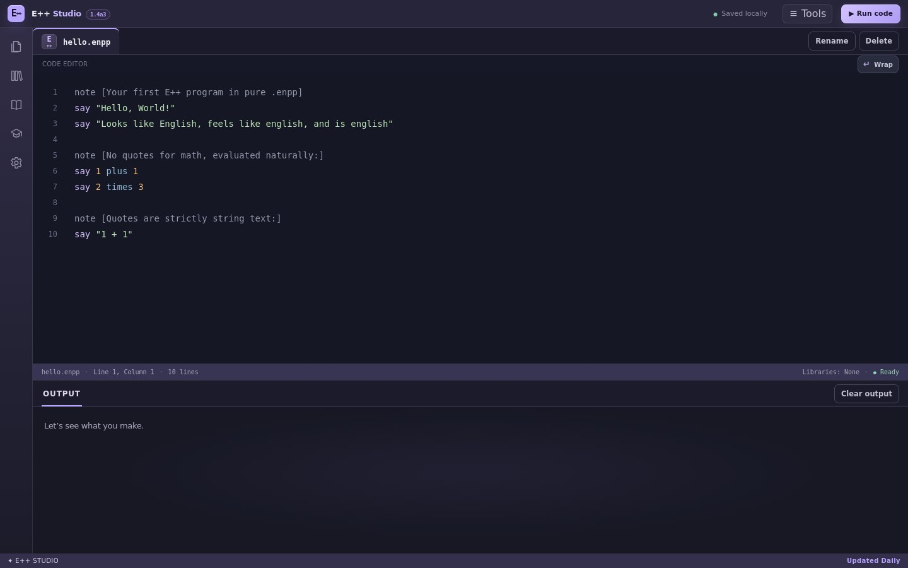
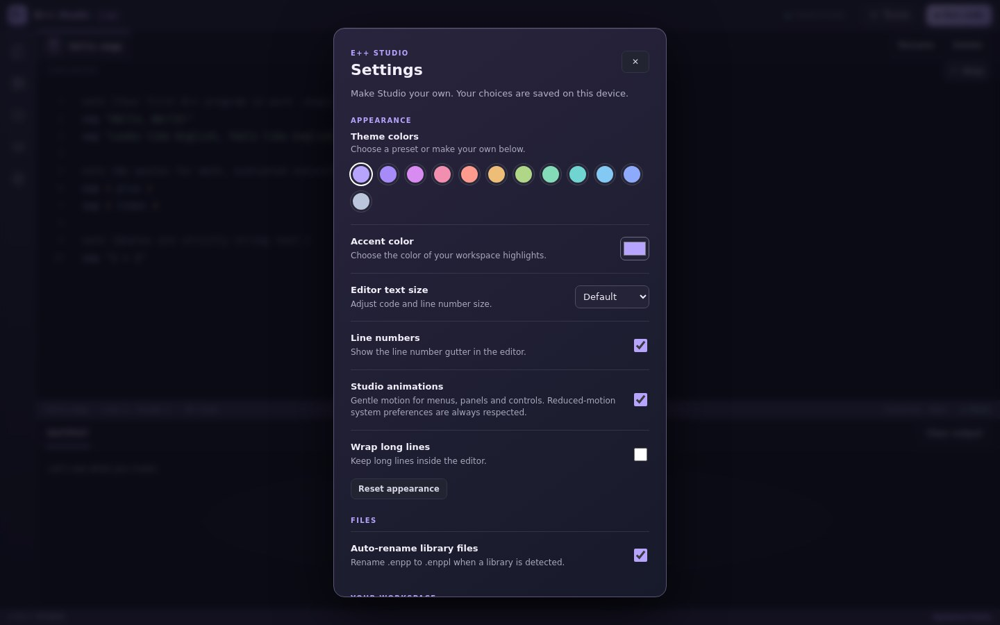
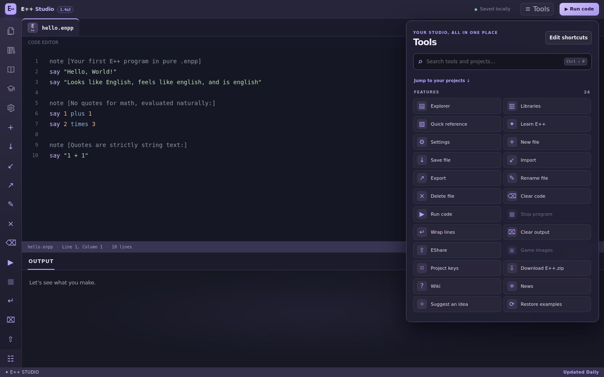
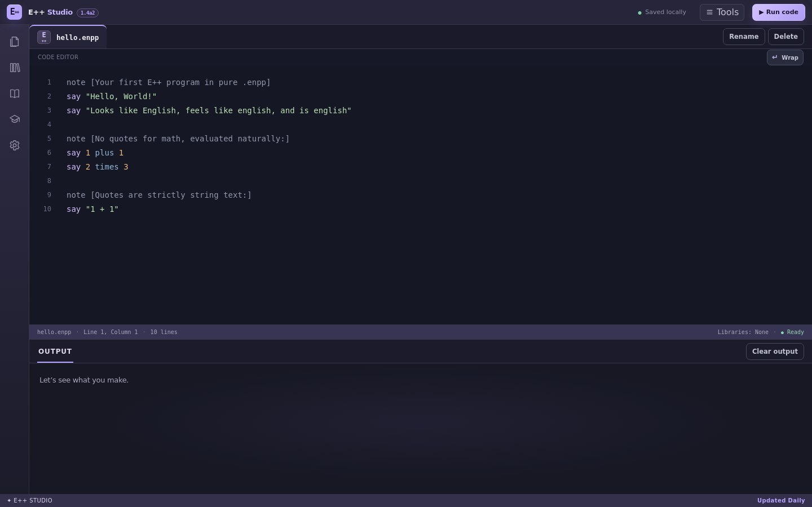
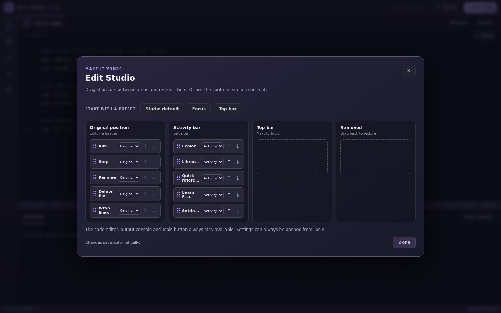
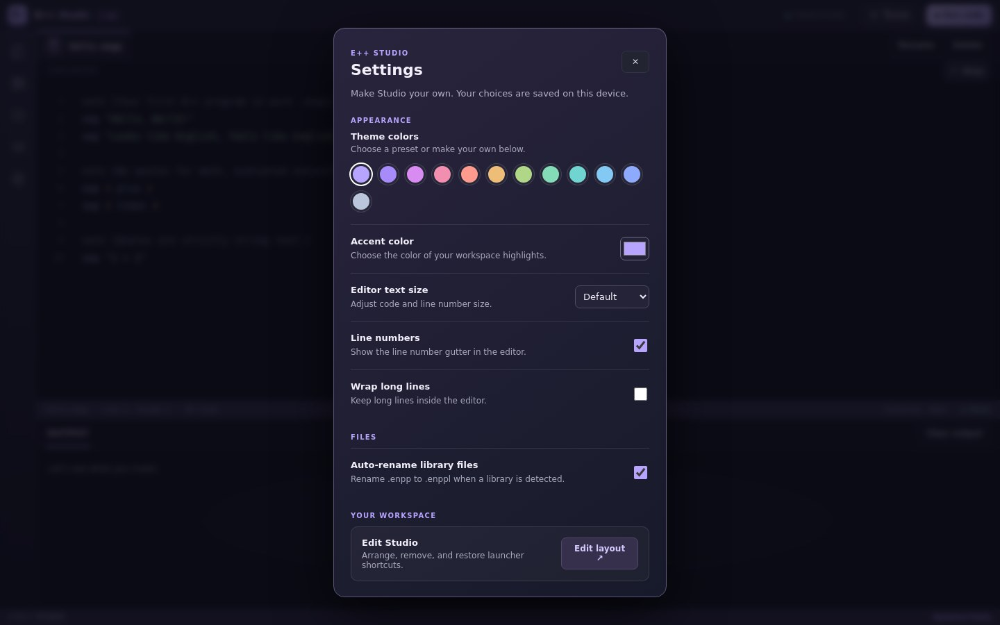

Small details, smoother moments.
Menus, panels, dialogs and controls now move gently as you work. Prefer things still? Turn Studio animations off in Settings. Your system’s reduced-motion preference is always respected.
E++ 1.4a3 brings a little movement to your workspace, plus thoughtful improvements that make creating feel smoother.

Menus, panels, dialogs and controls now move gently as you work. Prefer things still? Turn Studio animations off in Settings. Your system’s reduced-motion preference is always respected.
Reset your appearance without changing your files or layout. Keyboard focus stays where you need it when choosing colors and arranging launchers.


Open Tools with Ctrl+Shift+P to browse your features and projects. Customize which shortcuts appear in Tools and the sidebar. The explorer sorts files naturally, searches show a helpful empty state, and notifications stay visible for their full duration. EShare, presets and your existing projects are still right where you left them.
E++ 1.4a2 is here, with more ways to make your workspace your own. A little more you, a lot more room to create.


Open Settings → Edit Studio to drag launcher shortcuts between the activity bar and top bar. Remove what you don’t need, bring it back later, or start from a preset. Your editor, output and Tools always stay put.
Pick from a whole palette of colors, or create a custom accent. Fine-tune your editor with text size, line numbers and line wrapping. Your choices are saved on this device.

EShare now has one home in Tools. Automatic library file renaming remains on by default, and the news is always one click away.